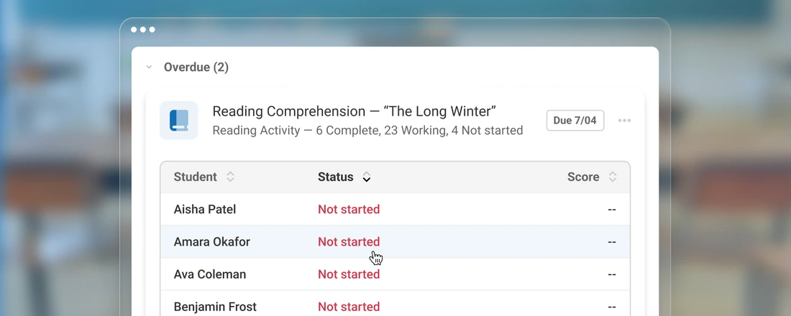
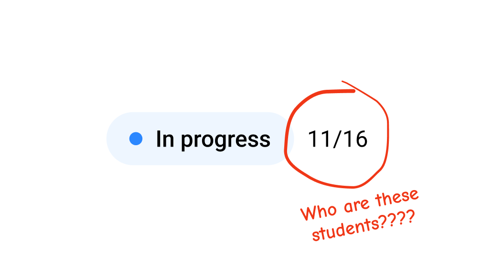
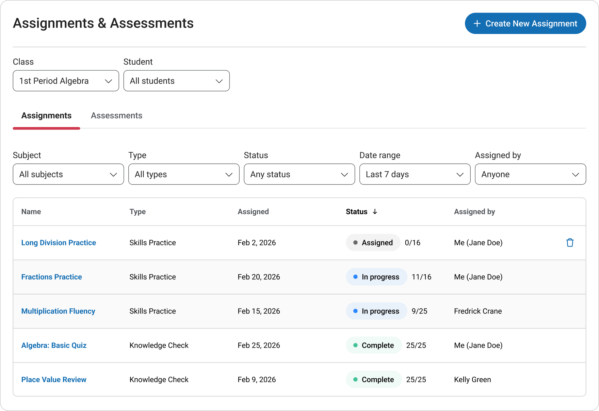
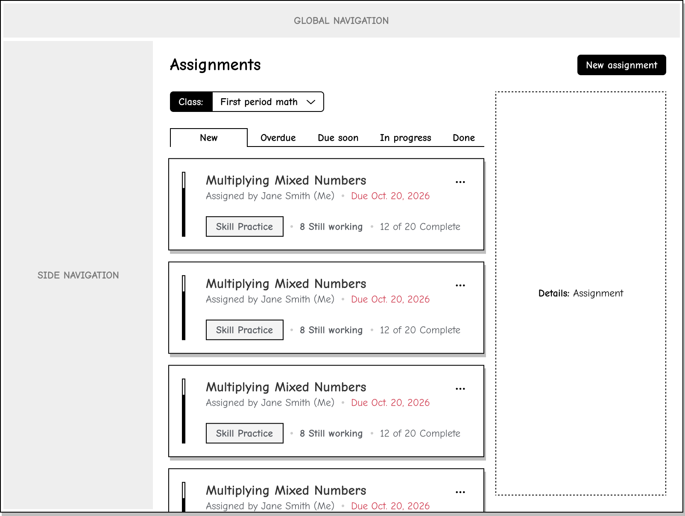
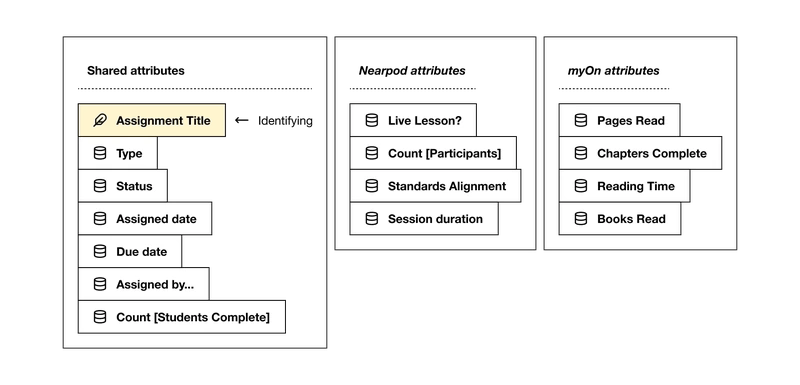

Renaissance / Classroom Assignment Management
Who needs my help today?
Teachers could see how many students had finished. Finding out who needed help still meant leaving the page.
I challenged our definition of the MVP and helped the team prioritize a view built around teacher attention.
Follow the decisions
- My contribution
- Product direction, interaction design, shared modeling, delivery
- Partners
- Product, UX research, engineering, and API owners
- Timeframe
- 4 weeks research & design
2 weeks development
The gap
One place for assignments.
Another place for answers.
Our first version brought assignments from several Renaissance products into one table. The team, me included, believed sorting and filtering would help teachers find what they needed.
Early testing and feedback exposed the missing piece. A count like “11/16” showed progress, but teachers had to open a separate product report to see who had finished and decide who needed attention.
Assignments was the app’s most visited page—and the page losing the most users to individual products. Bringing the apps together had not completed the teacher’s task.

See the original assignment page

The decision
Start with urgency.
Then show who.
I won support to test a different direction. Our UX research partners ran moderated sessions with five current users and five teachers new to the product suite, comparing the existing page with two prototypes.
Teachers organized their work by urgency. The existing table led with assigned dates. I replaced that flat list with groups: new assignments, overdue, due soon, in progress, and done.
The design decision
Help teachers decide where to look, then give them the student detail to decide whom to help.

Teachers described the grouping as consistent with how they expected to review assignments. Their qualitative feedback supported the direction; it did not establish learning outcomes.
Making it work
The interface needed
more than a new layout.
The API returned completion counts. To show students, I worked with engineering and API owners to add student IDs and support a student-level view.
I also facilitated an object-modeling workshop with product and engineering. We defined shared assignment attributes while preserving outcomes specific to each product, so one interaction could work across assignments stored differently.
Explore the shared assignment model

Title, type, assigned date, and due date were shared attributes. Product-specific detail included questions answered or pages read.
What shipped—and what waited
We prioritized urgency groups and student tables with working status and assignment-specific outcomes. A fuller performance summary waited, keeping the release focused on identifying assignments and students needing attention.
I co-authored requirements with the product manager and carried the direction through interaction states, engineering sessions, and handoff. Within the React app and Angular shell, timeframe pre-filtering limited how much student-level data the API needed to load.
What changed
Fewer trips to reports.
More of the answer in one place.
Version 2 shipped after four weeks of research and design and two weeks of development. Over a 60-day measurement period, we observed fewer exits from Assignments to reports in individual products. The initiative met its hub-adoption goal; exact figures are confidential.
This measures hub adoption. Research supported the interface direction. Neither result measures a change in student learning.
What I took forward
Completeness depended on whether teachers could answer their primary question. Consolidating products was a start. Making the next action clear made the hub useful.